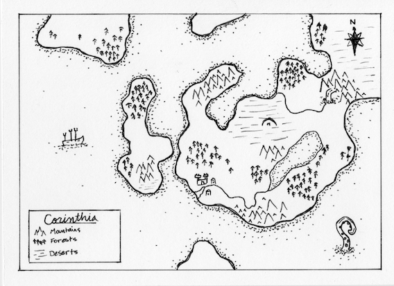

journal
research
hobbies
about
books
movies
climb
arts
photography
digital
ink & paint
models

Scar the lands jagged and rough, / Cut the desert wide. / Revel. / The woods rot and slough. /
Feast. / In Corinthia's pride, Rejoice.
Songs of the Unknown Child